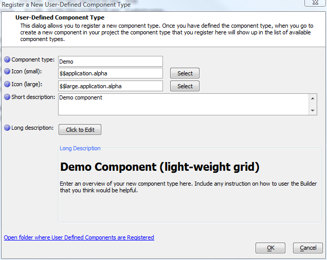
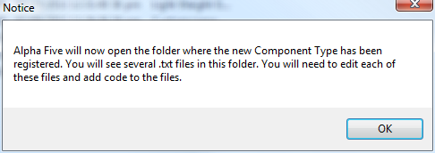
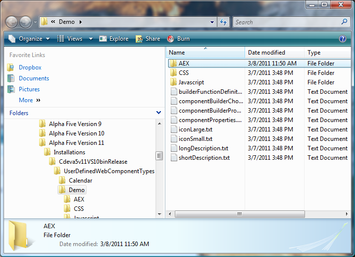

Creating a User-defined Component
Conceptually, creating a User-defined Component from a Custom Component is straightforward. All you have to do is generate the base files from the Alpha Five development environment, edit them in any text editor, drop the code from the Custom Component into the right sections, and add a Property Grid.In practice, it can take a day or more to go through this process, as it requires some thought and experimentation to get your properties right for all the expected Use Cases. It also requires some thought to decide what code goes into the system events and what code goes into the user events.
Note that you are now writing a templating system for components instead of writing a component. You are also working in a text editor that probably doesn't know anything about Xbasic, even if you use one like Notepad++
You'll find it useful later on to copy blocks of Xbasic code out of your text files and paste them into an Alpha Five script window for syntax checking. You'll also find it useful to copy blocks of HTML and JavaScript into separate editor windows set to do syntax highlighting for the appropriate language.
Let's go through the exercise of turning the Demo Custom Component (the light-weight grid) into a User-defined Component, and also discuss some of the choices you'll need to make for more complicated components.
Generate the starter files for the Component
Start by giving your Web Projects Control Panel the focus and pulling down the Edit|Advanced|Register New Component Type menu item. It will bring up a dialog which you should fill in to be roughly like this screen shot:
After you press OK, you'll see this notice:

Then you'll see an Explorer window that contains 8 text files and 3 directories:

Edit the starter files
Use a good plain-text editor to work with the starter files. Do not try to edit them with Word or WordPad. Use Notepad if you must, but you'll be happier using Notepad++, TextPad, or another multi-pane editor designed primarily for programmers.Whenever you need to get back to this directory, you can use the Edit|Advanced|Open Folder where User-defined Components are Registered menu item from Alpha Five.
Where should I put my code?
The first thing you need to understand when going from a Custom Component to a User-defined Component is that the User-defined Component has additional server events. The second thing you need to understand is that the code for all the the event handlers is defined as strings inside a function called onComponentSave.Open builderFunctionDefinitions.txt in your editor and you'll see (in part):
function onComponentSave as v (wp as p, vars as p) 'This function is called when the developer is editing the component in the Builder and he/she clicks the 'Save' icon. 'The function MUST set the following properties of the 'wp' object that is passed in: 'wp.systemXbasicFunctionDeclarations = A string containing function definitions that the component calls at runtime. 'wp.serverSideEvents.systemOnInitialRender = A string containing the defintion for this function: function systemOnInitialRender as v (e as p) 'wp.serverSideEvents.systemOnComponentInitialize = A string containing the defintion for this function: function systemOnComponentInitialize as v (e as p) 'wp.serverSideEvents.systemOnComponentExecute = A string containing the defintion for this function: function systemOnComponentExecute as v (e as p) wp.systemXbasicFunctionDeclarations = <<%code% 'define xbasic functions that the component uses when it is executing %code% wp.serverSideEvents.systemOnInitialRender = <<%code% function systemOnInitialRender as v (e as p) end function %code% wp.serverSideEvents.systemOnComponentInitialize = <<%code% function systemOnComponentInitialize as v (e as p) end function %code% wp.serverSideEvents.systemOnComponentExecute = <<%code% function systemOnComponentExecute as v (e as p) end function %code% end function
The code we had in the OnInitialRender function in our Custom Component will go in the systemOnInitialRender function in our User-defined Component. There will also be an OnInitialRender function in the User-defined Component that is exposed to the user: it is called after the systemOnInitialRender function.
The code we had in the Xbasic Functions area of our Custom Component will go in the wp.systemXbasicFunctionDeclarations code string of our user-defined Component.
Go ahead and do that now and save the file.
What about client-side event handlers?
The three client-side event handlers found in custom and user-defined events have system equivalents. The user-modifiable handler runs before the system event handler. You can add the client-side system event handling functions to the {component.object} as methods, adding an underscore before the name. For example, here is how you'd create a system canAjaxCallback handler.e.javascript = <<%js% {component.object}._canAjaxCallback = function(e) { alert('system canAjaxCallback called'); return true; } %js%
Add an argument
Up at the top of builderFunctionDefinitions.txt, after function onComponentSave as v (wp as p, vars as p) but before wp.systemXbasicFunctionDeclarations = <<%code%, add this code to define the componentArg_whatstate argument that needs to be resolved:dim wp.arguments[0] as p wp.arguments.resize(0) with wp.arguments[] .Name = "componentArg_whatstate" .DataType = "Character" .Source = "RUNTIMEBINDING" .VariableScope = "" .VariableName = "" .DefaultValue = "MA" end with
We essentially stole this code from the Xbasic pane of our existing Demo Custom Component. Near the end of that listing, you'll see code that look very much like the above, except that it uses the tmpl dot variable instead of the wp dot variable. In a User-defined Component, the run-time tmpl dot variable is generated from the definition-time wp dot variable. The .VariableWithScope definition is not useful in the context of the User-defined Component.
Now delete the first 11 or 12 lines of the file, starting with the "/****" block comment, so that the first line is function onComponentSave as v (wp as p, vars as p), and delete the last few lines of the file with the "****/" end of the block comment, so that it ends with end function. Save the file.
Test and iterate
Go to your Alpha Five Web Projects Control Panel, click on New|Web Component. Scroll down and double-click on More Components.... Pick the Demo component with the Greek Alpha icon. When the Demo builder comes up, save it as Demo1. Now cross your fingers and click on the Working Preview tab. If all goes well, you will get a working light-weight grid.If you get an error message, close and delete the Demo1 component, go back to your text editor, and copy all of builderFunctionDefinitions.txt. Switch to Alpha Five, open the code pane of your Control Panel, click on New, and create a New Script (using Xbasic editor). Paste the text you copied from the editor into the new script and press F4. The syntax checker should point you at the line of code that is at fault. Fix it in the script until it passes syntax checking, then copy it back into the editor and save it.
Now try creating a Demo component again — this time it should work.
When this is working, it's time to create a property grid so that you aren't restricted to displaying the customer table.
See also
User-defined Components V11When to turn a Custom Component into a User-defined Component V11
Creating a User-defined Component V11
Creating a Property Grid for a User-defined Component V11
Sharing and Using a User-defined Component V11